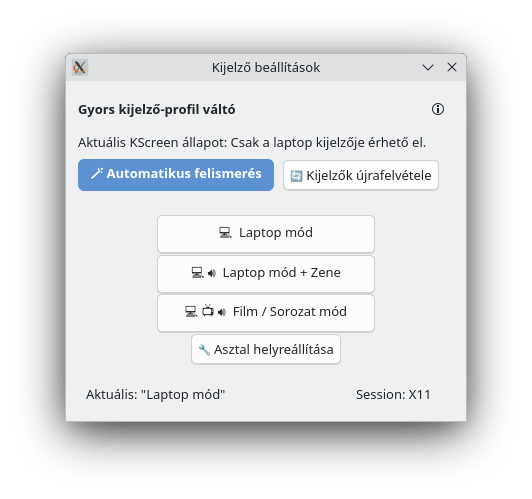

Egyszerű kijelzőprofil-kezelő KDE/X11 környezethez. Segítségével egy kattintással válthatsz a monitor, TV és soundbar profilok között, plasmoid-ból is elérhető gyors váltóval.
Képernyőképek



Saját fejlesztésű asztali alkalmazások Linuxra és Windowsra
Egyszerű kijelzőprofil-kezelő KDE/X11 környezethez. Segítségével egy kattintással válthatsz a monitor, TV és soundbar profilok között, plasmoid-ból is elérhető gyors váltóval.
